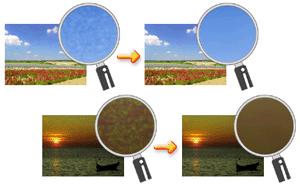
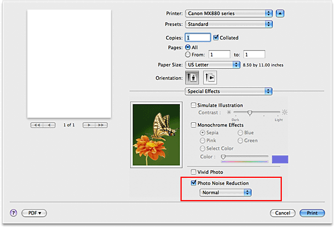

The procedure for performing Photo Noise Reduction is as follows:
-
Select Special Effects from the pop-up menu on the Print Dialog
-
Set Photo Noise Reduction
Check the Photo Noise Reduction check box and select Normal or Strong for the level.
 -
Complete the setup
Click Print.
When you execute print, the image will be printed with the digital camera noise being reduced.
 Note
Note
-
It is recommended to select Normal for most cases. Select Strong if you have selected Normal and the noise still bothers you.
-
Depending on application software or resolution of image data, effects of digital camera noise reduction may not be obvious.
-
When this function is used for other than photos taken by digital cameras, image may be distorted.